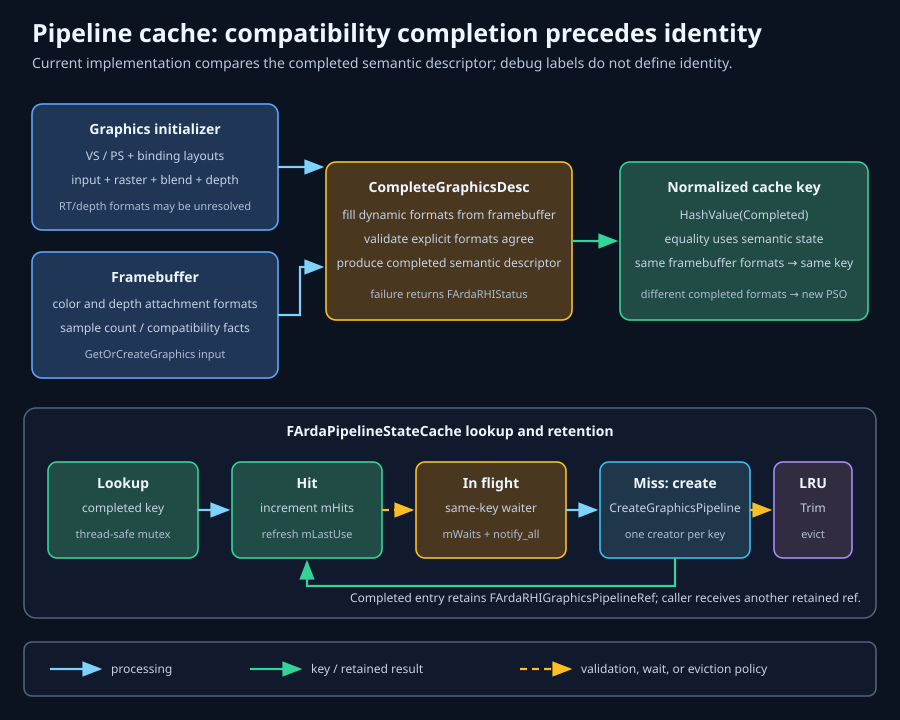

From rendering intent to reusable native state
Pipeline states
A pipeline state object packages a compatible set of programmable and fixed-function choices for the GPU. ArdaBackend lets renderer code describe graphics or compute intent, completes target-dependent fields, validates compatibility, and resolves the result through a bounded thread-safe cache.
Learning objectives
By the end of this chapter, you should be able to:
- name the shader, vertex-input, raster, depth/stencil, blend, topology, format, and sample state captured by a graphics PSO;
- explain why explicit APIs favor immutable PSOs over independent mutable state calls;
- distinguish graphics and compute pipeline descriptors from dynamic command state;
- derive a complete graphics descriptor from an ArdaBackend initializer and framebuffer;
- predict whether two descriptors compare equal and share a cache entry;
- reason about same-key creation, waiters, failures, and ownership across eviction;
- measure cache sizing and diagnose thrashing; and
- design a production precache and runtime cache strategy.
Prerequisites and chapter scope
Read Shaders first: pipeline descriptors retain shader objects and shader-derived binding layouts. Read RHI types & resources for device affinity, descriptors, formats, and intrusive references. This chapter assumes familiarity with rasterization, depth testing, blending, and multisampling.
The renderer-facing cache currently covers graphics and compute pipelines. The RHI exposes other pipeline families, but their creation and caching policies are outside this class. Viewports, scissors, framebuffers, vertex/index buffer bindings, resource binding sets, and push-constant values are command state rather than cache-key PSO state.
Foundational theory: why immutable PSOs?
Older graphics APIs presented shaders, blend modes, depth tests, vertex declarations, and render targets as independent mutable state. Drivers had to discover the effective combination at draw time, validate it, compile hidden native state, and cache the result heuristically. That made a nominally cheap draw call capable of triggering unpredictable CPU work.
Explicit APIs move the combination step earlier. An immutable pipeline state object captures the compatibility-sensitive choices. Creation may be expensive because the driver can validate interfaces, specialize machine code, and configure hardware state; binding the completed object can then be predictable.
Immutability also gives a stable cache key. If state could mutate after insertion, the key would stop describing the object. With value-like descriptors, the cache can ask two questions:
- Does this complete descriptor equal one already retained?
- If not, can exactly one thread create it while peers wait?
The tradeoff is combinatorial growth. If a renderer has 20 shader combinations, 4 blend variants, 3 depth modes, 2 sample counts, and 3 target-format families, the theoretical graphics space is 20 × 4 × 3 × 2 × 3 = 1,440 PSOs. Real workloads use a sparse subset, so production strategy centers on identifying and warming the working set rather than creating every possible Cartesian product.
ArdaBackend pipeline architecture
arda::backend::FArdaComputePipelineStateInitializer and arda::backend::FArdaGraphicsPipelineStateInitializer are renderer-facing descriptions, never concrete RHI pipeline objects. Each wraps an RHI descriptor. The graphics initializer adds a convention: omitted target formats and a zero sample count can be completed from the actual framebuffer. Its default constructor sets zero; the FromGlobalShaders factory copies the supplied fixed-state descriptor, whose own default sample count is one, so set the result back to zero when framebuffer-derived samples are intended.
arda::backend::FArdaPipelineStateCache is permanently bound to one RHI device. It owns cache entries, synchronization, statistics, and bounded diagnostics. It returns intrusive RHI references, so the cache and caller can share ownership of a created pipeline.
The device's direct CreateComputePipeline and CreateGraphicsPipeline operations remain predictable construction primitives: current tests show repeated direct calls return distinct objects and do not populate a device descriptor cache. Renderer-level reuse, framebuffer completion, LRU policy, and same-key coordination belong to FArdaPipelineStateCache.
Initializer, completed descriptor, cached object, command state
- Initializer
- Reusable renderer intent. Graphics compatibility fields may be unspecified.
- Completed descriptor
- Concrete, validated PSO identity after framebuffer-derived fields are filled.
- Cached pipeline
- Device-created immutable RHI object retained under descriptor equality.
- Command state
- Dynamic state such as framebuffer, viewports, scissors, bindings, and vertex buffers combined with a resolved pipeline for recording.
What a graphics PSO captures
FArdaRHIGraphicsPipelineDesc contains the state that affects how vertex data becomes fragments and how those fragments interact with attachments:
- Primitive topology: point, line, triangle, or patch interpretation, plus patch control-point count for tessellation.
- Input layout: attribute semantics, formats, buffer slots, offsets, and per-vertex or per-instance stepping, associated with the vertex shader.
- Programmable stages: vertex and optional hull, domain, geometry, and pixel shader references.
- Binding layouts: the resource schema visible to the participating stages.
- Raster state: fill/cull mode, front-face convention, depth bias, clipping, scissor and multisample behavior.
- Depth/stencil state: depth enable/write/compare and stencil masks and operations.
- Blend state: alpha-to-coverage and per-target source/destination blend factors and write behavior.
- Attachment compatibility: ordered color formats, optional depth format, and sample count.
Vertex and input stages
The input assembler interprets bound vertex buffers according to the input layout and topology. A semantic mismatch may fail pipeline creation or produce incorrect attributes. Input-layout identity includes its attributes and associated vertex shader object; changing only the command-time vertex buffer does not require a new PSO when its stride/layout contract remains compatible.
Indexed draws additionally bind an index buffer and format as command state. The index buffer selects vertices but does not alter shader interfaces or fixed-function compilation, so it is not in the graphics descriptor.
Fixed-function stages and platform detail
Raster, depth/stencil, and blend state are “fixed function” because specialized hardware executes them, but their configuration still affects native pipeline compilation. D3D12 and Vulkan expose similar concepts with different object boundaries and optional dynamic-state features. ArdaBackend chooses a portable descriptor identity; do not assume a field can be varied dynamically merely because one Vulkan extension permits it.
Viewport and scissor rectangles are deliberately dynamic in FArdaRHIGraphicsState. Their values commonly change with resolution, atlas tiles, shadow cascades, or split-screen views. Keeping them outside the PSO prevents unnecessary variants.
What a compute PSO captures
A compute PSO is smaller: FArdaRHIComputePipelineDesc contains one compute shader and its binding layouts. There is no vertex assembly, rasterization, blend state, depth/stencil state, framebuffer format, or sample count. Dispatch dimensions and concrete bindings are command state.
using namespace arda;
using namespace arda::backend;
const FArdaGlobalShaderInstance* shader =
shaderMap.Find(FBlurCS::GetStaticType());
if (!shader)
return false;
FArdaPipelineStateCache cache(GetDevice());
auto initializer =
FArdaComputePipelineStateInitializer::FromGlobalShader(
*shader, "Blur compute");
rhi::FArdaRHIComputePipelineRef pipeline;
auto status = cache.GetOrCreateCompute(initializer, pipeline);
if (!status)
return Report(status.mMessage);arda::backend::FArdaComputePipelineStateInitializer::FromGlobalShader copies the global shader object's RHI reference and binding layouts and supplies the requested debug name, or the shader type name by default.
Bind and dispatch
auto command = GetDevice()->CreateCommandList(
rhi::EArdaRHIQueueType::Compute);
if (!command)
return Report(command.mStatus.mMessage);
if (auto opened = command.mValue->Open(); !opened)
return Report(opened.mMessage);
rhi::FArdaRHIComputeState state;
state.mBindings.push_back(bindingSet);
if (auto bound = cache.SetComputePipelineState(
*command.mValue, initializer, eastl::move(state)); !bound)
return Report(bound.mMessage);
command.mValue->Dispatch(groupsX, groupsY, 1);
if (auto closed = command.mValue->Close(); !closed)
return Report(closed.mMessage);
return GetDevice()->ExecuteCommandList(command.mValue).mStatus;arda::backend::FArdaPipelineStateCache::SetComputePipelineState resolves the pipeline into state.mPipeline and then calls the command list. It passes the command list's device as the requesting device, making cross-device cache use a recoverable WrongDevice failure.
Render-target, depth, and sample compatibility
A graphics PSO must be compatible with the attachments used at draw time. Color attachment count and ordered formats determine pixel-output interpretation and blend-target structure. The depth/stencil format determines available depth and stencil aspects. The sample count controls multisample rasterization and must agree across attachments and pipeline state.
ArdaBackend lets a graphics initializer omit these fields:
- an empty
mColorFormatsmeans derive the complete ordered vector; mDepthFormat == Unknownmeans derive the depth format, or remainUnknownwhen no depth attachment exists; andmSampleCount == 0means derive one common attachment sample count.
Framebuffer completion derivation
For each color attachment and then the optional depth attachment, resolution performs:
effectiveFormat(target) =
target.attachment.format != Unknown
? target.attachment.format
: target.texture.desc.format
samples(target) = target.texture.desc.sampleCountEvery attachment must contain a texture and have a known effective format. The first attachment establishes S, the common sample count; every later attachment must have samples(target) == S. A framebuffer with no color or depth attachment cannot establish S and is rejected.
The completed descriptor is then:
completed.colorFormats =
initializer.colorFormats.empty()
? framebuffer.colorFormats
: requireEqual(initializer.colorFormats, framebuffer.colorFormats)
completed.depthFormat =
initializer.depthFormat == Unknown
? framebuffer.depthFormat
: requireEqual(initializer.depthFormat, framebuffer.depthFormat)
completed.sampleCount =
initializer.sampleCount == 0
? framebuffer.sampleCount
: requireEqual(initializer.sampleCount, framebuffer.sampleCount)Order matters. [RGBA8, RG16F] is not equal to [RG16F, RGBA8] because shader output locations and blend targets are positional. Format compatibility is exact descriptor equality here, not a broad “same byte width” rule.

Descriptor equality and hash identity
Equality decides identity. A hash provides a stable compact summary and is recorded in diagnostics; the current outer cache still scans candidate descriptors with full equality rather than using the hash as a unique key. Correctness requires the implication a == b ⇒ HashValue(a) == HashValue(b). A collision in the opposite direction cannot merge entries because full descriptors are compared.
Graphics equality includes topology, patch count, input layout reference, shader references, ordered binding-layout references, blend/raster/depth state values, ordered color formats, depth format, and sample count. Compute equality includes shader and ordered binding-layout references. Object references are identity-bearing: two separately created equivalent shader objects generally produce different pipeline keys.
Why debug names are excluded
mDebugName is diagnostic-only. Both descriptor equality and HashValue omit it. Thus changing "Depth prepass" to "Main camera depth" reuses the same PSO when all semantic fields match. Including labels would fragment the cache for no GPU-state difference and make localization or marker improvements expensive.
The exclusion has a diagnostic consequence: on a hit, the returned native object may retain the label from the first creator, while a later request has another label. Treat names as breadcrumbs, not identity. Creation failures still record the requesting initializer's name alongside the normalized descriptor hash.
Worked identity examples
A: shader=S, layouts=[L0], debug="Blur X"
B: shader=S, layouts=[L0], debug="Blur Y" -> equal, same cache entry
C: shader=S, layouts=[L0, L1]
D: shader=S, layouts=[L1, L0] -> not equal; order differs
E: graphics initializer formats=[]
F: graphics initializer formats=[RGBA8]
Framebuffer formats=[RGBA8] -> completed E equals completed F
G: same state, sampleCount=1
H: same state, sampleCount=4 -> not equalThis is why graphics lookup hashes the completed descriptor, not the partial initializer. Two ways of expressing the same concrete compatibility become one key.
PSO resolution and command flow

- Receive a compute initializer or a graphics initializer plus framebuffer.
- For graphics, derive omitted compatibility fields and reject explicit mismatches.
- Compute a diagnostic hash from the complete descriptor.
- Validate the optional requesting device against the cache's permanent device.
- Search by full descriptor equality.
- Return and touch a completed hit, wait for matching in-flight creation, or insert one in-flight miss.
- Create the native pipeline outside the cache mutex.
- Publish success and apply capacity, or remove the failed placeholder and retain a bounded diagnostic.
- Optionally write the pipeline into dynamic state and bind that state to the command list.
- Record draw or dispatch operations.
Framebuffer-compatible graphics example
auto initializer =
FArdaGraphicsPipelineStateInitializer::FromGlobalShaders(
*vertexShader, pixelShader, inputLayout);
initializer.mDesc.mDebugName = "Main pass";
// The factory copied fixed-state sample count 1; opt into derivation.
initializer.mDesc.mSampleCount = 0;
rhi::FArdaRHIGraphicsState state;
state.mFramebuffer = framebuffer;
state.mBindings = passBindings;
state.mViewports.push_back({0.f, width, 0.f, height, 0.f, 1.f});
state.mScissors.push_back(
{0, int32_t(width), 0, int32_t(height)});
auto status = cache.SetGraphicsPipelineState(
*commandList, initializer, eastl::move(state));
if (!status)
LogPipelineFailure(status.mMessage);arda::backend::FArdaGraphicsPipelineStateInitializer::FromGlobalShaders starts from optional fixed state, then supplies the input layout, vertex shader, optional pixel shader, and their layouts. Pixel layouts already present by reference are not duplicated.
Worked example: a cached graphics draw across two frames
This example follows one realistic renderer path from registered global shaders to a second-frame cache hit. The calls to AcquireMainFramebuffer(), AcquireSceneInputLayout(), BuildSceneBindings(), Report(), and the logging functions are application helpers; all ArdaBackend and RHI calls use their current signatures. The cache is deliberately created outside the frame function—constructing it every frame would discard reuse.
1. Resolve long-lived shader and target inputs
using namespace arda;
using namespace arda::backend;
rhi::FArdaRHIDeviceRef device = GetDevice();
if (!device)
return false;
// Borrowed pointers into shaderMap; shaderMap must outlive this setup.
const FArdaGlobalShaderInstance* vertexShader =
shaderMap.Find(FSceneVS::GetStaticType());
const FArdaGlobalShaderInstance* pixelShader =
shaderMap.Find(FScenePS::GetStaticType());
if (!vertexShader || !pixelShader)
return false;
// Application helpers: omitted resource/render-target setup.
rhi::FArdaRHIInputLayoutRef inputLayout =
AcquireSceneInputLayout(*device, vertexShader->GetShader());
rhi::FArdaRHIFramebufferRef framebuffer =
AcquireMainFramebuffer();
eastl::vector<rhi::FArdaRHIBindingSetRef> passBindings =
BuildSceneBindings(*device, *vertexShader, *pixelShader);
if (!inputLayout || !framebuffer)
return false;
auto initializer =
FArdaGraphicsPipelineStateInitializer::FromGlobalShaders(
*vertexShader,
pixelShader,
inputLayout);
initializer.mDesc.mDebugName = "Scene opaque";
// Opt into framebuffer-derived sample count. Color formats are already
// empty and depth format is Unknown in the default fixed-state descriptor.
initializer.mDesc.mSampleCount = 0;
// Persist this cache across every frame that should share PSOs.
FArdaPipelineStateCache cache(device);arda::backend::FArdaGlobalShaderMap::Find returns borrowed pointers to arda::backend::FArdaGlobalShaderInstance objects owned by the map. The instances retain their RHI shaders and binding layouts. Do not reset the global shader map while an initializer or cached PSO still depends on those objects.
2. Understand the reusable initializer and cache
arda::backend::FArdaGraphicsPipelineStateInitializer::FromGlobalShaders copies RHI references for the input layout, shaders, and merged shader binding layouts into the initializer descriptor. Those references keep their objects alive. The arda::backend::FArdaPipelineStateCache then retains the device and, after a miss, the created pipeline.
3. Record, bind, draw, and submit
auto recordAndSubmitFrame = [&]() -> rhi::FArdaRHIStatus
{
auto commandResult =
device->CreateCommandList(rhi::EArdaRHIQueueType::Graphics);
if (!commandResult)
return commandResult.mStatus;
auto commandList = eastl::move(commandResult.mValue);
if (auto status = commandList->Open(); !status)
return status;
rhi::FArdaRHIGraphicsState state;
state.mFramebuffer = framebuffer;
state.mBindings = passBindings;
state.mViewports.push_back(
{0.f, float(width), 0.f, float(height), 0.f, 1.f});
state.mScissors.push_back(
{0, int32_t(width), 0, int32_t(height)});
auto status = cache.SetGraphicsPipelineState(
*commandList, initializer, eastl::move(state));
if (!status)
return status;
// SetGraphicsPipelineState has already called SetGraphicsState with
// the resolved pipeline inserted into state.mPipeline.
commandList->Draw({3, 1, 0, 0, 0});
if (status = commandList->Close(); !status)
return status;
auto submission = device->ExecuteCommandList(commandList);
return submission.mStatus;
};arda::backend::FArdaPipelineStateCache::SetGraphicsPipelineState first resolves the PSO, places it in state.mPipeline, and then invokes arda::rhi::IArdaRHICommandList::SetGraphicsState. Calling SetGraphicsState again is unnecessary. Only after that status succeeds is arda::rhi::IArdaRHICommandList::Draw safe to record.
4. Derive the key and observe the second-frame hit
On frame one, resolution reads the framebuffer attachments. Each attachment's explicit view format wins over its texture format; all attachment sample counts must agree. Because the initializer left color formats empty, depth format Unknown, and sample count zero, those fields are copied into a temporary complete descriptor. The resulting key is the full descriptor: topology, patch count, input-layout reference, shader references, ordered binding-layout references, blend/raster/depth-stencil values, ordered color formats, depth format, and sample count. The framebuffer object itself is not part of the key.
const auto before = cache.GetStats();
if (auto status = recordAndSubmitFrame(); !status) // frame 1: cold
return Report(status.mMessage);
const auto afterFirst = cache.GetStats();
if (auto status = recordAndSubmitFrame(); !status) // frame 2: same key
return Report(status.mMessage);
const auto afterSecond = cache.GetStats();
const bool observedColdMiss =
afterFirst.mMisses == before.mMisses + 1;
const bool observedSecondFrameHit =
afterSecond.mHits == afterFirst.mHits + 1;
LogCacheObservation(observedColdMiss, observedSecondFrameHit);The first request inserts an in-flight entry, creates the native PSO, and records one miss. The second frame rebuilds dynamic arda::rhi::FArdaRHIGraphicsState, but completion produces the same descriptor, so equality finds the retained pipeline and records a hit. New viewport/scissor values, concrete binding sets, or another framebuffer with the same ordered formats and sample count do not change this PSO key.
5. Inspect failures and clean up in ownership order
for (const FArdaPipelineStateDiagnostic& diagnostic :
cache.GetDiagnostics())
{
LogPipelineFailure(
diagnostic.mDescriptorHash,
diagnostic.mDebugName,
diagnostic.mMessage);
}
const FArdaPipelineStateCacheStats finalStats = cache.GetStats();
LogCacheTotals(
finalStats.mHits,
finalStats.mMisses,
finalStats.mCreateFailures,
finalStats.mGraphicsEntries);
// Shutdown/device-recovery path, not ordinary per-frame code.
if (auto idle = device->WaitForIdle(); !idle)
return Report(idle.mMessage);
cache.Clear(); // releases cache-owned completed PSO references
passBindings.clear();
framebuffer.Reset();
inputLayout.Reset();arda::backend::FArdaPipelineStateCache::GetDiagnostics returns bounded records for compatibility, device, and creation failures; arda::backend::FArdaPipelineStateCache::GetStats returns cumulative counters and current occupancy. arda::backend::FArdaPipelineStateCache::Clear removes completed cache entries but does not reset statistics or diagnostics and cannot invalidate pipeline references retained elsewhere.
Errors and changes that produce a miss
- A null shader lookup, input layout, or framebuffer fails before recording.
- Missing attachments, unknown formats, mixed sample counts, or explicit initializer/framebuffer disagreement return
InvalidArgumentduring completion. - A command list from another device returns
WrongDevice; native descriptor or state-binding rejection propagates its RHI status. - Changing shader object identity, input-layout identity, binding-layout identity or order, topology, patch count, blend/raster/depth-stencil state, completed color/depth formats, or sample count produces a different descriptor and therefore a miss.
- Changing only
mDebugName, viewport, scissor, vertex/index buffers, binding-set resources, or framebuffer identity with unchanged compatibility fields does not produce a miss. Drawreturnsvoid; propagate the preceding state-binding status, then use command close/submission status and native validation output to diagnose later failures.
Thread-safe same-key creation
Pipeline construction is expensive enough that worker threads may request the same key concurrently during scene loading or parallel command preparation. A naïve “check, unlock, create, insert” implementation races: every thread can miss and create a duplicate. Holding one global mutex during driver creation avoids duplicates but blocks unrelated keys.
ArdaBackend uses an in-flight placeholder:
- The first requester inserts the complete descriptor with
mbInFlight = true, increments misses and in-flight count, then unlocks. - A same-key requester finds the placeholder, increments waits, and sleeps on a condition variable.
- Different-key requests can inspect or insert entries while creation runs.
- The creator reacquires the lock and either publishes the pipeline or removes the placeholder on failure.
- All waiters wake. On success they loop, observe a completed hit, update recency, and share the same pipeline reference. On failure one awakened requester may retry creation.
Current tests launch eight same-key requests and require one miss, seven hits, one retained entry, zero final in-flight operations, and identical pipeline object identity. mWaits can be less than the number of hits when creation finishes before some threads reach the placeholder.
Creation happens outside the mutex, which protects throughput, but descriptor objects and every referenced shader/layout must remain valid through the call. RHI references stored in the copied descriptor provide that ownership.
LRU behavior, eviction, and ownership
Each access receives a monotonically increasing use serial. A cache hit updates the entry's serial; successful creation updates it again. When occupancy exceeds configured capacity, ArdaBackend evicts the completed entry with the smallest serial—the least recently used pipeline. Compute and graphics have independent capacities.
capacity = 2
request A: cache [A]
request B: cache [A, B]
hit A: recency B < A
request C: create C, evict B -> cache [A, C]
request B: miss and recreate Barda::backend::FArdaPipelineStateCache::Trim waits until internal creation count reaches zero, then evicts to caller-supplied compute and graphics limits. arda::backend::FArdaPipelineStateCache::Clear similarly waits and removes every completed entry.
Eviction releases only the cache's intrusive reference. A caller-held FArdaRHIComputePipelineRef or FArdaRHIGraphicsPipelineRef keeps the object alive. Therefore eviction removes lookup reuse; it does not invalidate already recorded state or a live caller reference. Once all references are released, destruction follows the RHI object's ownership rules.
Precaching and startup work
Precaching calls the same get-or-create path but discards the returned local reference after the cache retains it. arda::backend::FArdaPipelineStateCache::PrecacheCompute requires only the compute initializer. arda::backend::FArdaPipelineStateCache::PrecacheGraphics also needs the framebuffer so its key is the same complete descriptor later used for binding.
for (const auto& pass : startupPasses)
{
auto status = cache.PrecacheGraphics(
pass.mInitializer,
pass.mRepresentativeFramebuffer);
if (!status)
return Report(status.mMessage);
}
for (const auto& job : startupComputeJobs)
{
auto status = cache.PrecacheCompute(job.mInitializer);
if (!status)
return Report(status.mMessage);
}The key word is representative. A PSO warmed for RGBA8, 1× will not satisfy RGBA16F, 1× or RGBA8, 4×. Build the warmup list from actual pass format families and quality settings. Warm after the global shader map and required input layouts exist, but before latency-sensitive recording.
Precaching can be parallelized across different keys because native creation runs outside the outer mutex. Measure the driver and platform: excessive parallel compilation can saturate CPU, serialize inside the native driver, or increase startup memory. A bounded worker pool is usually safer than one task per PSO.
Cache sizing, performance, and thrashing
arda::backend::FArdaPipelineStateCacheConfiguration defaults to 128 compute entries, 128 graphics entries, and 64 diagnostics. Those are policy defaults, not universal performance targets. A deferred desktop renderer, a compute-only tool, and a memory-constrained mobile workload have different working sets.
Working-set reasoning
Let W be the number of distinct complete descriptors reused within the observation window and C the relevant capacity. If C ≥ W, compulsory misses dominate and steady-state hit rate can approach 100%. If C < W and access cycles evenly through all W keys, LRU can miss every request.
capacity C = 3
cyclic workload = A, B, C, D, A, B, C, D, ...
after A B C: cache holds A B C
D evicts A
A evicts B
B evicts C
C evicts D
steady-state hit rate = 0%This is cache thrashing: bounded memory is achieved by repeatedly paying the most expensive operation. Raising capacity above the active set fixes this pattern; so can reducing unnecessary descriptor variants, separating phase-specific caches, or keeping strong caller references and avoiding repeated cache lookups for very hot pipelines.
Measurements
arda::backend::FArdaPipelineStateCache::GetStats returns cumulative hits, misses, waits, creation failures, current in-flight count, and retained compute/graphics counts. Derive:
requests = hits + misses
hitRate = requests != 0 ? hits / requests : 0
creationFailureRate =
misses != 0 ? createFailures / misses : 0
sameKeyContention =
requests != 0 ? waits / requests : 0Sample per loading phase and gameplay interval, not only over process lifetime. A high aggregate hit rate can hide a frame spike caused by one new PSO. Correlate misses with frame time, descriptor hash, debug name, pass, format family, sample count, and content transition.
Cache memory is not just the small C++ entry. Native driver pipeline objects may retain compiled code and metadata. Profile process and driver-visible memory on each platform while changing capacities. Keep diagnostics bounded because failure storms should not create a second unbounded cache.
Why this cache, and a production strategy
Why a shared renderer cache?
An unbounded global map maximizes reuse but retains every transient variant. Per-thread maps reduce lock contention but duplicate expensive native PSOs and make warmup fragmented. ArdaBackend chooses a shared same-key creation domain with bounded LRU retention. The costs are mutex traffic, waiter coordination, and possible eviction churn; the benefits are one object per active descriptor and centralized telemetry.
Recommended layered strategy
- Control permutations: remove shader defines and fixed-state variants that do not materially change output or performance.
- Enumerate known passes: derive expected descriptors from render-graph passes, materials, format families, quality levels, and sample counts.
- Warm the stable set: precache startup, menu, first-scene, and common transition pipelines against representative framebuffers.
- Allow bounded runtime discovery: let uncommon content create on miss, but capture telemetry and avoid doing so on latency-critical threads where possible.
- Size from traces: choose compute and graphics capacities above measured simultaneous working sets with headroom for transitions.
- Preserve native caches where available: ArdaBackend's in-memory object cache is not a replacement for API/driver pipeline libraries persisted across runs.
- Version persistent data: include application build, shader artifact hashes, backend, adapter/driver identity, and pipeline schema version.
- Plan invalidation: reset cache ownership during device loss, shader-map replacement, or incompatible render-target reconfiguration.
ArdaBackend does not currently expose serialization of its renderer cache. Persistent native pipeline caches, where supported below the RHI, should be treated as an additional layer: the Arda cache avoids duplicate live objects, while native persistence can reduce the cost of creating those objects after process restart.
Platform considerations
- D3D12: PSO creation can compile driver-specific machine state; pipeline libraries may reduce repeat cost but require careful versioning.
- Vulkan: pipeline caches and newer pipeline compilation features can shift cost, yet render-target formats, sample counts, layouts, and fixed state still define compatibility.
- Mobile and integrated GPUs: smaller memory budgets favor tighter capacities, but thermal and CPU limits make runtime churn especially undesirable.
- Console-style fixed hardware: offline enumeration and controlled content can support more comprehensive warmup.
- Multi-device systems: each
FArdaPipelineStateCachebelongs to exactly one device; descriptors referencing another device are invalid even if semantically equivalent.
Failure analysis
InvalidArgumentbefore native creation- The graphics descriptor could not be completed: a framebuffer is missing, an attachment has no texture or unknown format, attachments disagree on sample count, the framebuffer is empty, or explicit fields mismatch. Compare the complete ordered formats and samples rather than only checking dimensions.
InvalidArgumentduring native creation- A required shader is absent, shader stages are wrong, binding layouts are incompatible, tessellation fields are malformed, or fixed state is unsupported. Read the retained RHI message and enable native validation.
WrongDevice- The requesting command list or explicit requesting device differs from the cache's device, or dynamic state references a foreign framebuffer/resource. Rebuild shaders, layouts, framebuffer, pipeline cache, and command list in one device domain.
- One request fails while peers wait
- The failed creator removes the in-flight placeholder and wakes waiters. A waiter can become a new miss and retry. If the failure is deterministic, repeated concurrent retries can amplify work; stop scheduling the bad descriptor and surface the first diagnostic.
- Unexpected miss after changing only a label
- Debug names are excluded, so another semantic field changed. Compare shader and layout object identity, layout order, input layout, fixed state, completed formats, and sample count.
- Unexpected hit
- Verify the field you intended to vary actually participates in descriptor equality. Dynamic viewport, scissor, binding resources, and framebuffer object identity do not create different PSOs when completed compatibility fields are equal.
- High
mWaits - Many threads converge on cold keys. Precache earlier, deduplicate scheduling, or designate compilation workers. Waits are not duplicate creation, but they can stall parallel recording.
- High misses with occupancy pinned at capacity
- This is likely LRU churn. Trace descriptor hashes and reuse distance, increase capacity, reduce variants, or separate workload phases. Merely calling precache cannot help if warm entries are evicted before use.
- Pipeline remains alive after
Clear - This is expected when a caller or recorded state retains an intrusive reference. Clear removes cache ownership and future hits; it is not a forced destruction API.
- Stutter despite high hit rate
- Inspect misses at the exact spike, native driver compilation below a nominal cache hit elsewhere, command synchronization, shader loading, and resource transitions. Aggregate cache ratios do not establish causality.
- Diagnostic buffer lacks the oldest failure
- Diagnostics are bounded. When full, the oldest record is removed. Increase
mMaxDiagnosticsduring investigation or stream failures to the application log as they occur.
Chapter summary
- Immutable PSOs move compatibility validation and potentially expensive driver compilation ahead of draw or dispatch.
- Graphics PSOs capture shader stages, input and fixed-function state, layouts, ordered attachment formats, depth format, and sample count; compute PSOs capture one shader and layouts.
- Framebuffer completion converts partial graphics intent into a concrete descriptor before hashing and lookup.
- Equality defines identity; hashes accelerate it; debug names are deliberately excluded from both.
- An in-flight placeholder guarantees one same-key creation while allowing different keys to progress.
- LRU eviction removes cache ownership but does not invalidate references retained by callers.
- Precaching removes known cold misses only when warmed descriptors exactly match runtime compatibility.
- Capacity must be based on measured working sets; undersized cyclic workloads can produce zero steady-state hits.
Checkpoint questions
- Which graphics state belongs in a PSO, and which commonly changing state remains on the command list?
- Why does PSO immutability improve both driver predictability and cache correctness?
- What fields distinguish a compute descriptor from a graphics descriptor?
- Given two color attachments with sample counts 1 and 4, can framebuffer completion succeed?
- If an attachment view format is known and its texture format differs, which one does completion use?
- Why must format completion occur before hash lookup?
- Will changing only
mDebugNameproduce a new cache entry? What diagnostic ambiguity follows? - How does the in-flight placeholder prevent duplicate creation without serializing all keys behind driver work?
- Why can an evicted PSO remain valid?
- In a four-key cyclic workload with capacity three, why does LRU reach a zero percent steady-state hit rate?
- Why must graphics precaching use a representative framebuffer?
- Which statistics would distinguish cold-start misses, same-key contention, creation failure, and capacity thrashing?
Further reading within these docs
- Shaders — understand artifact, stage, binding-layout, and global shader lifetimes feeding pipeline descriptors.
- RHI types & resources — study descriptor equality, formats, framebuffers, input layouts, and intrusive references.
- Commands — bind graphics/compute state and record draws or dispatches with correct resource transitions.
- Presentation — see how swap-chain format and sample strategy influence the final graphics compatibility family.
- Diagnostics — combine cache diagnostics with D3D12 or Vulkan validation output.
- Glossary — revisit PSO, pipeline, immutable, hash, framebuffer, format, sample count, cache, LRU, and ownership.
- API reference — search exact signatures after learning the subsystem model here.